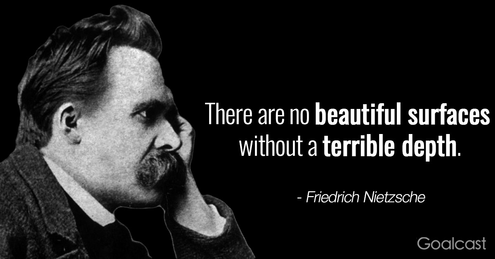

-

- 
-

Magazin online!
Dorinta de a cunoaste este mult mai puternica decat dorinta de a trai - Stephen Hawking
Site-ul Libraria online este destinat in mare parte cunoscatorilor de cosmologie si filosofie,ce nu isi pot colecta informatiile de la orice sursa web sau in magazine,privind ori lipsa materialelor sau a interesului populatiei a acestor subiecte ori preturile oferite ce influenteaza cererea de pe piata.
Web design by YellowRocketAgency